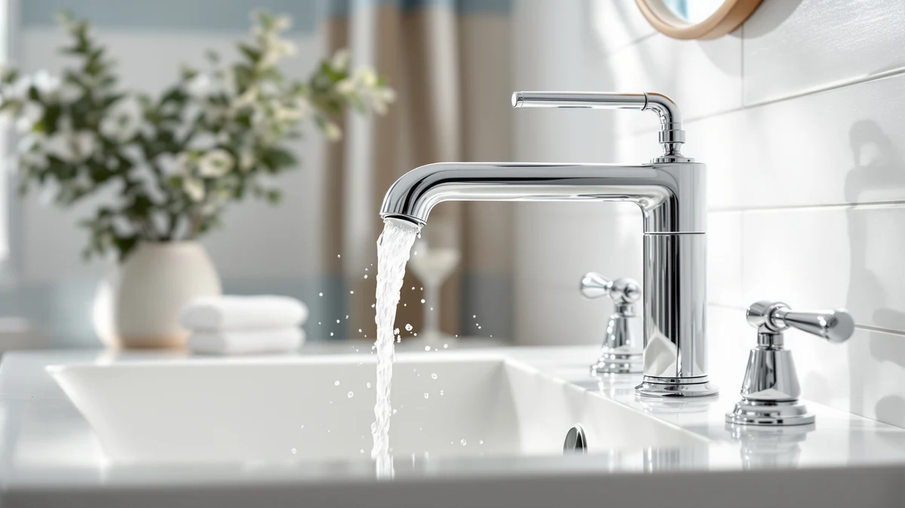

How to Clean Stainless Steel Bathroom Faucets: Complete Guide (2026)
Prices and picks verified as of October 2026. Independent, reader-supported reviews.


Things to Know Before You Buy
- Stainless steel faucets come in brushed, satin, and polished finishes, and matching your tool to the finish matters most when you clean stainless steel bathroom faucets.
- Vinegar cuts hard water deposits in minutes, but leaving it on too long can etch the metal, so rinse it off within 10 to 15 minutes.
- Abrasive sponges, steel wool, and bleach-based cleaners are the most common causes of permanent dulling on stainless faucets.
- Always wipe in the direction of the brushed grain lines, not across them, to avoid visible scratch marks.
- Drying the faucet with a microfiber cloth after every use prevents most of the spotting that makes stainless steel look dirty.
Knowing how to clean stainless steel bathroom faucets properly saves you from the hazy water spots, fingerprint smudges, and dull gray film that all-purpose cleaners tend to leave behind. Stainless steel resists rust, but it isn't immune to hard water minerals, soap residue, or the scratches that come from the wrong scrubbing tool. A faucet that looks dingy after a quick wipe with a paper towel usually needs a different approach, not more elbow grease. The fix takes about half an hour and a handful of ingredients you probably already have under the sink.
This guide walks through five steps: identifying your finish, clearing loose grime, dissolving mineral deposits, scrubbing out stubborn spots, and finishing with a drying method that stops new streaks from forming. Each step uses mild, affordable products such as white vinegar and dish soap instead of abrasive pads or bleach-based sprays that dull a brushed or polished finish over time. If your faucet has pitting, deep scratches, or a finish that's flaking despite regular care, cleaning won't fix structural wear, and the picks further down can help you find a replacement.
What You'll Need
- Supplies: white distilled vinegar, mild dish soap, and microfiber cloths, the core supplies for cleaning stainless steel bathroom faucets
- Tools: a soft-bristle brush and a spray bottle
Step 1: Check the Finish and Gather Your Supplies
Before you touch a cleaning product to the metal, run your finger across the surface to feel for the brushed grain lines that most stainless bathroom faucets have. Brushed and satin finishes show scratches more easily than a polished stainless look, so plan to use the softest tool that gets the job done, which in most cases is a microfiber cloth rather than a sponge.
Set out white distilled vinegar, a small amount of mild dish soap, two or three clean microfiber cloths, a soft-bristle brush, and a spray bottle. You likely have all of these already. Skip anything labeled as an abrasive cleaner, bathroom scouring powder, or bleach-based spray. Those products strip the thin protective layer that keeps stainless steel resistant to rust, and once that layer wears away, water spots and streaks show up faster than before.
If you're cleaning this faucet as part of a broader bathroom refresh, check the base and handles for the same film and hard water buildup, since they're usually made from the same material and respond to the same method.
Step 2: Rinse and Wipe Down Loose Grime
Run warm water over the stainless steel faucet for a few seconds, or wipe it down with a cloth dampened in warm water if you'd rather not splash the counter. This loosens dried toothpaste flecks, hair product residue, and the dust film that settles on faucets between cleanings.
Follow with a dry pass using a second microfiber cloth. Wiping away loose debris first keeps grit from scratching the finish once you start scrubbing in the next steps, one of the most common ways people damage a faucet without realizing it.
This step alone handles everyday upkeep. If your faucet still looks dull or spotted after this quick pass, the buildup is mineral deposits rather than surface dirt, and that's what the next two steps target.
Step 3: Dissolve Hard Water Deposits With Vinegar
Fill a spray bottle with plain white distilled vinegar, or soak a cloth in it if you'd rather not spray near electrical fixtures. Apply it directly to the chalky white spots and cloudy film around the base, spout, and handles, where hard water tends to collect.
Let the vinegar sit for 10 to 15 minutes. The acid breaks down calcium and lime deposits without scratching the surface, which is why it works better here than scrubbing with force. For heavier buildup around the aerator or spout tip, wrap a vinegar-soaked cloth around that spot and leave it in place for the full 15 minutes rather than spraying and walking away.
Don't extend the soak much past 15 minutes. Vinegar is mild, but leaving it on stainless steel for hours, or using it daily as a default cleaner, can gradually etch the finish and make it more prone to spotting rather than less.
Step 4: Scrub Stubborn Spots With a Soft Brush
After rinsing off the vinegar, check for any spots that didn't fully dissolve, usually dried soap scum or mineral crust around tight corners like the base of the spout. Mix a few drops of mild dish soap into warm water and dip your soft-bristle brush or an old toothbrush into it.
Work in short strokes that follow the direction of the brushed lines on the metal, not across them. Scrubbing across the grain is how a lot of people end up with faint crosshatch scratches that catch the light and make an otherwise clean faucet look worn. Apply light pressure. Stainless steel resists corrosion, but the finish itself is a thin surface treatment that abrasive scrubbing wears down over months of aggressive cleaning.
Rinse the brush frequently so you're not reapplying the grime you loosened back onto the surface.
Step 5: Rinse, Dry, and Buff to Prevent New Spots
Rinse the entire stainless steel faucet with clean water to remove any leftover soap or vinegar residue. Leftover cleaner is one of the main reasons faucets look streaky right after cleaning instead of clear.
Dry the faucet immediately with a clean, dry microfiber cloth rather than letting it air-dry. If you let water sit and evaporate on its own, the minerals it carries settle on the surface and form new spots. Buff the surface in small circular motions until it's fully dry and has an even sheen.
Keep a microfiber cloth near the sink and give the faucet a ten-second wipe-down after each use. That single habit prevents most of the spotting and film that eventually requires another deep clean, and it's the difference between a faucet that looks new for years and one that needs this full process every few weeks.
Common Mistakes to Avoid
The biggest mistake people make when they learn how to clean stainless steel bathroom faucets is reaching for whatever bathroom spray is already under the sink. Many all-purpose and bathroom cleaners contain bleach or ammonia, and both strip the thin protective layer that keeps stainless steel resistant to rust and spotting. Strip that layer away, and the faucet develops water spots faster than it did before you cleaned it.
Steel wool, scouring pads, and the rough side of a kitchen sponge cause the second most common problem: visible scratching. These tools work fine on cast iron or heavily rusted metal, but stainless steel bathroom fixtures have a finish that's thinner and softer than people expect, and abrasive pads leave permanent marks that no amount of polishing removes.
Scrubbing across the grain instead of with it is another frequent error, especially on brushed and satin finishes, where the direction of the lines is easy to miss under bathroom lighting. Letting vinegar sit for hours, or using it as a daily spray instead of an occasional treatment, slowly etches the surface too.
Finally, skipping the drying step undoes most of the work. If you let a faucet air-dry, it collects new mineral spots within hours, so the five-minute habit of wiping it down after cleaning, and after regular use, matters more than the product you choose.
Our Top Picks
If scrubbing and vinegar soaks haven't restored your faucet, or if it's pitted, cracked, or leaking at the base, cleaning stainless steel bathroom faucets won't fix structural damage. These three replacements cover a range of budgets and finishes, from an affordable matte black option to a touchless sensor faucet and a premium integrated system.

Editor’s Pick
Bathroom Faucet Matte Black Bathroom
A budget-friendly matte black faucet that resists fingerprints and water spots better than polished chrome, based on verified buyer reviews.
$26.99
Check Price on Amazon
Best Value
Greenspring Touchless Bathroom Faucet Sensor
A touchless sensor faucet that cuts down on the soap scum and hard water spotting that builds up around handles, according to owner feedback.
$48.99
Check Price on Amazon
Premium Choice
American Standard 7020255.295 Clean-IR Integrated
A premium integrated system with an antimicrobial infrared sensor that reduces the hand contact that leaves smudges and buildup.
$321.00
Check Price on AmazonCan I use baking soda to clean a stainless steel bathroom faucet?
Yes, baking soda mixed into a thin paste works well on stuck-on soap scum and won't scratch stainless steel the way powdered cleansers can.
Will vinegar damage a stainless steel faucet finish?
Diluted or full-strength white vinegar is safe for short soaks of 10 to 15 minutes, which is enough time to dissolve hard water deposits.
Frequently Asked Questions
Can I use baking soda to clean a stainless steel bathroom faucet?
Will vinegar damage a stainless steel faucet finish?
How often should I clean stainless steel bathroom faucets?
Why does my stainless steel faucet still look cloudy after cleaning?
Are store-bought stainless steel cleaners worth using?
Verdict
Cleaning stainless steel bathroom faucets doesn't take special equipment or expensive products. White vinegar dissolves the hard water deposits that dull the finish, mild dish soap lifts soap scum and grime, and a microfiber cloth prevents the new spots that form when water sits and air-dries. Work with the grain of a brushed finish, keep vinegar soaks under 15 minutes, and skip anything abrasive, and a faucet that looks dingy after months of neglect can look close to new again in about half an hour.
If you've worked through this method and the faucet still shows pitting, rust, or a finish that's flaking no matter how carefully you clean it, that's wear the cleaning process can't reverse. In that case, a replacement makes more sense than another round of scrubbing. The OSIUB matte black faucet above is a reasonable starting point for most bathrooms, since matte finishes show fewer fingerprints and water spots between cleanings than polished chrome does. Whichever faucet you choose, the same five-step cleaning routine keeps it looking new.